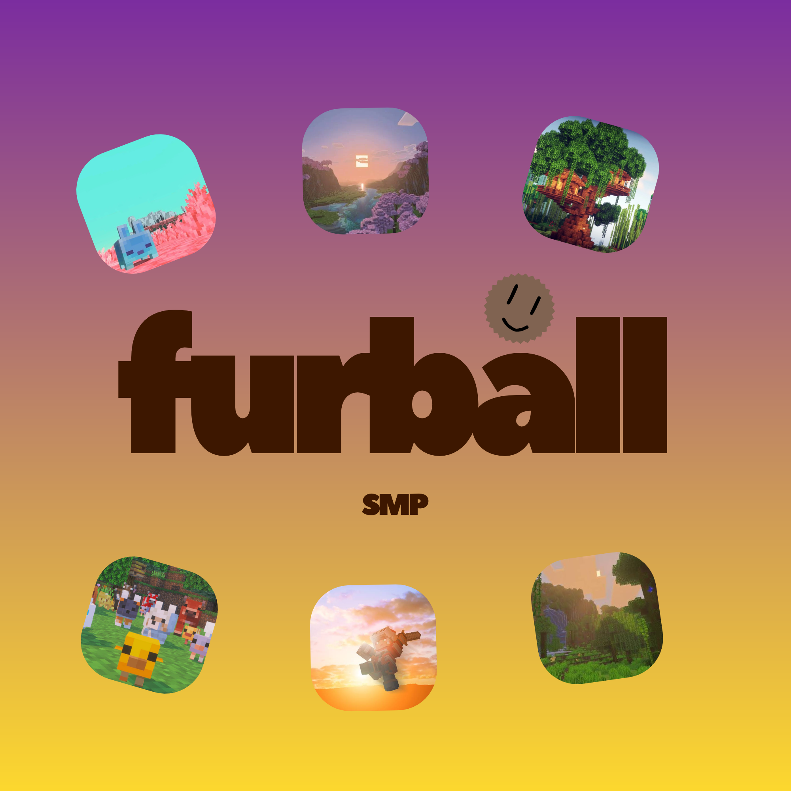

Survival, but everyone's a little feral about it.
Furball SMP is a small survival world for people who name their sheep, hoard cobblestone out of habit, and would rather build a burrow than a mansion. No grief, no drama — just a long-running world we're all slowly making a mess of together.

What's in the den
A world built to last, with just enough structure to keep it fair.
One world, no resets
Same map since launch. Builds, farms, and rail lines stick around — your base from three months ago is still standing, probably slightly overgrown.
Raw survival, no claims
Vanilla rules — no land protection, no grief-proof boxes. Everything you build is exposed to the world, the way survival is meant to be.
Watched by Spyglass
Every block change is logged. If something actually gets griefed, admins can find it and roll it back — no claims needed to feel safe.
Seasonal events
Small community builds, boat races, and the occasional boss night. Nothing mandatory.
Getting in
No applications, no waiting — just connect. The only limit is room on the server itself.
Copy the IP
No whitelist, no form — just drop it into your client.
Connect
Load in and you're straight into the world.
Find somewhere to settle
No set spawn hub to build near — go find your own patch of world.
Infrastructure caps out at 50 players online at once. If the server's full when you try to connect, just try again in a bit.
House rules
Short list, kept short on purpose.
- No griefing or stealingThere's no claim system, so this one's on trust — Spyglass logs everything either way.
- Build within a reasonable distanceKeeps the map from stretching thin and travel from taking forever.
- No lag machinesFarms are welcome; farms built to break the server aren't.
- Be decent in chatDisagreements happen; cruelty gets you removed.